Matplotlib 第四课
Table of Contents
- 1. part-III, How to speak "MPL"
- 2. Exercise
- 3. Misc tools
1 part-III, How to speak "MPL"
In the previous parts, you learned how Matplotlib organizes plot-making by figures and axes. We broke down the components of a basic figure and learned how to create them. You also learned how to add one or more axes to a figure, and how to tie them together. You even learned how to change some of the basic appearances of the axes. Finally, we went over some of the many plotting methods that Matplotlib has to draw on those axes. With all that knowledge, you should be off making great and wonderful figures.
Why are you still here?
"We don't know how to control our plots and figures!" says some random voice in the back of the room.
Of course! While the previous sections may have taught you some of the structure and syntax of Matplotlib, it did not describe much of the substance and vocabulary of the library. This section will go over many of the properties that are used throughout the library. Note that while many of the examples in this section may show one way of setting a particular property, that property may be applicible elsewhere in completely different context. This is the "language" of Matplotlib.
1.1 Colors
This is, perhaps, the most important piece of vocabulary in Matplotlib. Given that Matplotlib is a plotting library, colors are associated with everything that is plotted in your figures. Matplotlib supports a very robust language for specifying colors that should be familiar to a wide variety of users.
1.1.1 Colornames
First, colors can be given as strings. For very basic colors, you can even get away with just a single letter:
| b | blue |
| g | green |
| r | red |
| c | cyan |
| m | magenta |
| y | yellow |
| k | black |
| w | white |
Other colornames that are allowed are the HTML/CSS colornames such as "burlywood" and "chartreuse". See the full list of the 147 colornames. For the British speaking and poor spellers among us (I am not implying that British speakers are poor spellers!), we allow "grey" where-ever "gray" appears in that list of colornames. All of these colornames are case-insensitive.
1.1.2 Hex values
Colors can also be specified by supplying a HTML/CSS hex string, such as
'#0000FF' for blue. Support for an optional alpha channel was added for
v2.0.
1.1.3 256 Shades of Gray
A gray level can be given instead of a color by passing a string representation of a number between 0 and 1, inclusive. '0.0' is black, while '1.0' is white. '0.75' would be a light shade of gray.
import numpy as np import matplotlib.pyplot as plt t = np.arange(0.0, 5.0, 0.2) # declare the colors explicitly. plt.plot(t, t, 'r', t, t**2, 'lightgray', t, t**3, '0.0') plt.show()
1.1.4 RGB[A] tuples
You may come upon instances where the previous ways of specifying colors do
not work. This can sometimes happen in some of the deeper, stranger levels
of the library. When all else fails, the universal language of colors for
matplotlib is the RGB[A] tuple. This is the "Red", "Green", "Blue",
and sometimes "Alpha" tuple of floats in the range of [0, 1]. One means
full saturation of that channel, so a red RGBA tuple would be (1.0, 0.0,
0.0, 1.0), whereas a partly transparent green RGBA tuple would be
(0.0, 1.0, 0.0, 0.75). The documentation will usually specify whether it
accepts RGB or RGBA tuples. Sometimes, a list of tuples would be required
for multiple colors, and you can even supply a Nx3 or Nx4 numpy array in
such cases.
In functions such as plot() and scatter(), while it may appear that they
can take a color specification, what they really need is a "format
specification", which includes color as part of the format. Unfortunately,
such specifications are string only and so RGB[A] tuples are not supported
for such arguments (but you can still pass an RGB[A] tuple for a "color"
argument).
Oftentimes there is a separate argument for "alpha" where-ever you can specify a color. The value for "alpha" will usually take precedence over the alpha value in the RGBA tuple. There is no easy way around this inconsistency.
1.1.5 Cycle references
you give a cycle of color, you don't care what is the 1st 2nd 3rd … color is.
what you want is color your current component with the 3rd color, the ONLY job
you need to do is giving color C3.
With the advent of fancier color cycles coming from the many available styles, users needed a way to reference those colors in the style without explicitly knowing what they are. So, in v2.0, the ability to reference the first 10 iterations of the color cycle was added. Whereever one could specify a color, you can supply a 2 character string of 'C#'. So, 'C0' would be the first color, 'C1' would be the second, and so on and so forth up to 'C9'.
1.2 Markers
| marker | description | marker | description | marker | description | marker | description |
|---|---|---|---|---|---|---|---|
| "." | point | "+" | plus | "," | pixel | "x" | cross |
| "o" | circle | "D" | diamond | "d" | thin_diamond | ||
| "8" | octagon | "s" | square | "p" | pentagon | "*" | star |
| " " | vertical line | "_" | horizontal line | "h" | hexagon1 | "H" | hexagon2 |
| 0 | tickleft | 4 | caretleft | "<" | triangle_left | "3" | tri_left |
| 1 | tickright | 5 | caretright | ">" | triangle_right | "4" | tri_right |
| 2 | tickup | 6 | caretup | "^" | triangle_up | "2" | tri_up |
| 3 | tickdown | 7 | caretdown | "v" | triangle_down | "1" | tri_down |
| "None" | nothing | None | nothing | " " | nothing | "" | nothing |
xs, ys = np.mgrid[:4, 9:0:-1] markers = [".", "+", ",", "x", "o", "D", "d", "", "8", "s", "p", "*", "|", "_", "h", "H", 0, 4, "<", "3", 1, 5, ">", "4", 2, 6, "^", "2", 3, 7, "v", "1", "None", None, " ", ""] descripts = ["point", "plus", "pixel", "cross", "circle", "diamond", "thin diamond", "", "octagon", "square", "pentagon", "star", "vertical bar", "horizontal bar", "hexagon 1", "hexagon 2", "tick left", "caret left", "triangle left", "tri left", "tick right", "caret right", "triangle right", "tri right", "tick up", "caret up", "triangle up", "tri up", "tick down", "caret down", "triangle down", "tri down", "Nothing", "Nothing", "Nothing", "Nothing"] fig, ax = plt.subplots(1, 1, figsize=(7.5, 4)) for x, y, m, d in zip(xs.T.flat, ys.T.flat, markers, descripts): ax.scatter(x, y, marker=m, s=100) ax.text(x + 0.1, y - 0.1, d, size=14) ax.set_axis_off() plt.show()
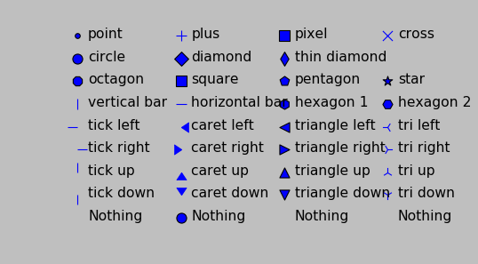
1.3 Line style
| linestyle | description |
|---|---|
| '-' | solid |
| '–' | dashed |
| '-.' | dashdot |
| ':' | dotted |
| 'None' | draw nothing |
| ' ' | draw nothing |
| '' | draw nothing |
%matplotlib inline import numpy as np import matplotlib.pyplot as plt t = np.arange(0.0, 5.0, 0.2) plt.plot(t, t, '-', t, t**2, '--', t, t**3, '-.', t , -t, ':') plt.show()
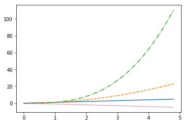
When using linestyle in bar() method, you must use the string name instead of
the short name.
# ls=> linestyle ; ec=> edgecolor ; lw=>linewidth fig, ax = plt.subplots(1, 1) ax.bar([1,2,3,4], [10, 20, 30, 40], ls='dashed', ec='r', lw=5) plt.show()
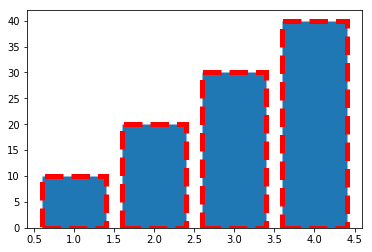
1.4 markers , colors and linestyle can form a string argument.
1.4.1 marker+markerfacecolor
| String symbol | marker | color |
|---|---|---|
| "8m" | 8->octagon | m->magenta |
| "*y" | *->star | y->yellow |
| "sg" | s->square | g->green |
String symbol can be used as value of para color of plot/scatter/etc.
plt.plot(x,y, '[marker][markeredgecolor]')
t = np.arange(0.0, 5.0, 0.2) plt.plot(t, t, "*y", t, t**2, "8m", t, t**3, "sg") plt.show()
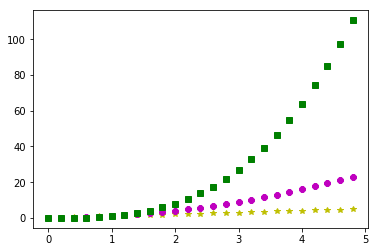
1.4.2 linecolor + linestyle
plt.plot(x,y, '[linecolor][linestyle]')
t = np.arange(0., 5., 0.2) plt.plot(t, t, 'r--', t, t**2, 'bs', t, t**3, 'g^') plt.show()

1.4.3 linecolor + linestyle + marker + mfc + mfe
plt.plot(x,y, '[linecolor][linestyle][marker]', mfc='...', mec='...')
t = np.arange(0., 5., 0.1) a = np.exp(-t) * np.cos(2*np.pi*t) plt.plot( t, a , 'r:D', mfc='g', mec='y') plt.show()
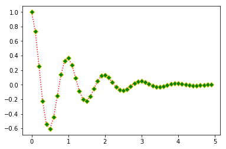
1.5 Plot attributes
With just about any plot you can make, there are many attributes that can be
modified to make the lines and markers suit your needs. Note that for many
plotting functions, Matplotlib will cycle the colors for each dataset you
plot. However, you are free to explicitly state which colors you want used
for which plots. For plt.plot(), you can mix the specification for the
colors, linestyles, and markers in a single string.
| Property | Value Type | description |
|---|---|---|
| alpha | float | how transparent it is |
| color or c | any matplotlib color | 'color' always describe the color of linestyle. |
| dash_capstyle | ['butt', 'round' 'projecting'] | |
| dash_joinstyle | ['miter' 'round' 'bevel'] | |
| dashes | sequence of on/off ink in points | |
| drawstyle | [ ‘default’ ‘steps’ ‘steps-pre’ | |
| ‘steps-mid’ ‘steps-post’ ] | ||
| linestyle or ls | [ '-' '–' '-.' ':' 'None' ' ' ''] | |
| and any drawstyle in combination with a | ||
| linestyle, e.g. 'steps–'. | ||
| linewidth or lw | float value in points | |
| marker | [ 0 1 2 3 4 5 6 7 'o' 'd' 'D' 'h' 'H' | |
| '' 'None' ' ' `None` '8' 'p' ',' | ||
| '+' 'x' '.' 's' '\*' '\_' '|' | ||
| '1' '2' '3' '4' 'v' '<' '>' '^' ] | ||
| markeredgecolor or mec | any matplotlib color | |
| markeredgewidth or mew | float value in points | |
| markerfacecolor or mfc | any matplotlib color | |
| markersize or ms | float | |
| solid_capstyle | ['butt' 'round' 'projecting'] | |
| solid_joinstyle | ['miter' 'round' 'bevel'] | |
| visible | [`True` `False`] | |
| zorder | any number | which component is at up front, which is at back |
Property 'color' always describe the color of linestyle.
3 color in this tabel, and their different means:
- 'color' : color of line;
- 'mfc' : color of marker's face;
- 'mec' : color of marker's edge.
t = np.arange(0., 5., 0.1) a = np.exp(-t) * np.cos(2*np.pi*t) plt.plot(t, a, ls='-.', marker='D', mec='g', mfc='y', c='r')
or you can use the format:
plt.plot(x,y, '[linecolor][linestyle][marker]', mfc='...', med='...')
t = np.arange(0., 5., 0.2) plt.plot(t, t, 'r--', t, t**2, 'bs', t, t**3, 'g^') plt.show()
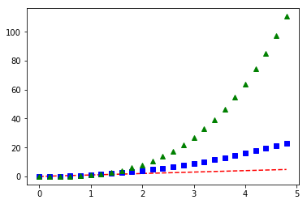
1.6 Colormaps
Another very important property of many figures is the colormap. The job of a colormap is to relate a scalar value to a color. In addition to the regular portion of the colormap, an "over", "under" and "bad" color can be optionally defined as well. NaNs will trigger the "bad" part of the colormap.
As we all know, we create figures in order to convey information visually to our
readers. There is much care and consideration that have gone into the design of
these colormaps. Your choice in which colormap to use depends on what you are
displaying. In mpl, the "jet" colormap has historically been used by default,
but it will often not be the colormap you would want to use. Much discussion has
taken place on the mailing lists with regards to what colormap should be
default. The v2.0 release of Matplotlib adopted a new default colormap,
'viridis', along with some other stylistic changes to the defaults.
Here is the full gallery of all the pre-defined colormaps, organized by the types of data they are usually used for.
# Have colormaps separated into categories: # http://matplotlib.org/examples/color/colormaps_reference.html cmaps = [('Perceptually Uniform Sequential', [ 'viridis', 'plasma', 'inferno', 'magma']), ('Sequential', [ 'Greys', 'Purples', 'Blues', 'Greens', 'Oranges', 'Reds', 'YlOrBr', 'YlOrRd', 'OrRd', 'PuRd', 'RdPu', 'BuPu', 'GnBu', 'PuBu', 'YlGnBu', 'PuBuGn', 'BuGn', 'YlGn']), ('Sequential (2)', [ 'binary', 'gist_yarg', 'gist_gray', 'gray', 'bone', 'pink', 'spring', 'summer', 'autumn', 'winter', 'cool', 'Wistia', 'hot', 'afmhot', 'gist_heat', 'copper']), ('Diverging', [ 'PiYG', 'PRGn', 'BrBG', 'PuOr', 'RdGy', 'RdBu', 'RdYlBu', 'RdYlGn', 'Spectral', 'coolwarm', 'bwr', 'seismic']), ('Qualitative', [ 'Pastel1', 'Pastel2', 'Paired', 'Accent', 'Dark2', 'Set1', 'Set2', 'Set3', 'tab10', 'tab20', 'tab20b', 'tab20c']), ('Miscellaneous', [ 'flag', 'prism', 'ocean', 'gist_earth', 'terrain', 'gist_stern', 'gnuplot', 'gnuplot2', 'CMRmap', 'cubehelix', 'brg', 'hsv', 'gist_rainbow', 'rainbow', 'jet', 'nipy_spectral', 'gist_ncar'])] nrows = max(len(cmap_list) for cmap_category, cmap_list in cmaps) gradient = np.linspace(0, 1, 256) gradient = np.vstack((gradient, gradient)) def plot_color_gradients(cmap_category, cmap_list, nrows): fig, axes = plt.subplots(nrows=nrows) fig.subplots_adjust(top=0.95, bottom=0.01, left=0.2, right=0.99) axes[0].set_title(cmap_category + ' colormaps', fontsize=14) for ax, name in zip(axes, cmap_list): ax.imshow(gradient, aspect='auto', cmap=plt.get_cmap(name)) pos = list(ax.get_position().bounds) x_text = pos[0] - 0.01 y_text = pos[1] + pos[3]/2. fig.text(x_text, y_text, name, va='center', ha='right', fontsize=10) # Turn off *all* ticks & spines, not just the ones with colormaps. for ax in axes: ax.set_axis_off() for cmap_category, cmap_list in cmaps: plot_color_gradients(cmap_category, cmap_list, nrows) plt.show()
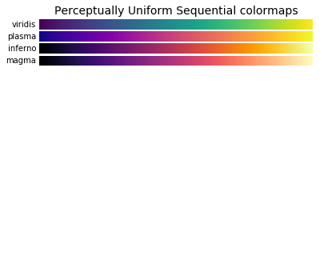
1.7 Mathtext
Oftentimes, you just simply need that superscript or some other math text
in your labels. Matplotlib provides a very easy way to do this for those
familiar with LaTeX. Any text that is surrounded by dollar signs will be
treated as "mathtext". Do note that because backslashes are prevelent in
LaTeX, it is often a good idea to prepend an r to your string literal so that
Python will not treat the backslashes as escape characters.
'r'+string in python means this 'string' is a raw String. every symbol inside is itself, instead of its special mean.
plt.scatter([1,2,3,4], [4,3,2,1]) plt.title(r'$\sigma_i=15$', fontsize=20) plt.show()
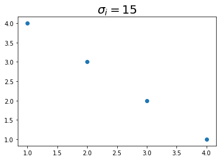
1.8 Hatches
背景纹路 A Patch object can have a hatching defined for it.
| symbol | description | | / | diagonal hatching | | \ | back diagonal | | \vert | vertical | | - | horizontal | | + | crossed | | x | crossed diagonal | | o | small circle | | O | large circle (upper-case 'o') | | . | dots | | * | stars |
Letters can be combined, in which case all the specified hatchings are done. Repeating a character increases the density of hatching of that pattern.
mpl.rc('axes', prop_cycle=cycler('color', ['r', 'orange', 'c', 'y']) + cycler('hatch', ['x', 'xx-', '+O.', '*'])) x = np.array([0.4, 0.2, 0.5, 0.8, 0.6]) y = [0, -5, -6, -5, 0] plt.fill(x+1, y) plt.fill(x+2, y) plt.fill(x+3, y) plt.fill(x+4, y) plt.show()
1.9 Property Cycles
In case you haven't noticed, when you do multiple plot calls in the same
axes – and not specify any colors – the color for each plot is
different! The default style in Matplotlib will cycle through a list of
colors if you don't specify any. This feature has been in Matplotlib for a
long time and it is similar to Matlab behavior.
In v1.5, this feature was extended so that one can cycle through other properties besides just color. Now, you can cycle linestyles, markers, hatch styles – just about any property that can be specified is now possible to be cycled.
This feature is still being refined, and there has been significant improvements in its usability since v1.5, but here is a basic example that will work for v2.0 or greater (for v1.5, you may need to have this cycler expression quoted).
import matplotlib as mpl from matplotlib.rcsetup import cycler # define an property cycle for 'axes' mpl.rc('axes', # define 3 property cycles: color cycle, linewidth cycle, linestyle cycle. prop_cycle=cycler('color', 'rgc') + # <- color cycle cycler('lw', [1,4,6]) + # <- linewidth cycle cycler('linestyle', ['-', '-.', ':']) # <- linestyle cycle ) t=np.arange(0. ,5., 0.2) plt.plot(t, t) plt.plot(t, t**2) plt.plot(t, t**3) plt.show()
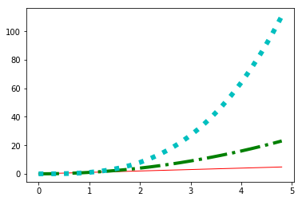
1.9.1 Ugly tie contest!
mpl.rc('axes', prop_cycle=cycler('color', ['r', 'orange', 'c', 'y']) + cycler('hatch', ['x', 'xx-', '+O.', '*'])) x = np.array([0.4, 0.2, 0.5, 0.8, 0.6]) y = [0, -5, -6, -5, 0] plt.fill(x+1, y) plt.fill(x+2, y) plt.fill(x+3, y) plt.fill(x+4, y) plt.show()
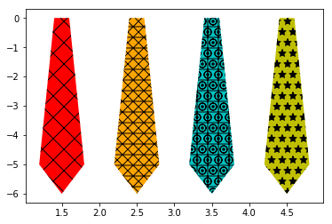
1.10 Transforms
The topic of transforms in Matplotlib, that is the ability to map the
coordinates specified by your data to the coordinates of your figure,
is very advanced and will not be covered in this tutorial. For those who are
interested in learning about them, see the transformation tutorial. For those
who are really daring, there are the developer guides to transforms and
scales. While most users will never, ever need to understand Matplotlib
transforms to the level described in those links, it is important to be aware
of them, and their critical role in figure-making.
In a figure, there are four coordinate systems: display, figure, axes, and
data. Transforms are used to convert coordinates in one system into another
system for various uses. This is how Matplotlib knows exactly where to place
the ticks and ticklabels, even when you change the axis limits. The ticker
says that the tick and label "1.5", for example, are to go at data
x-coordinate 1.5. The transform says that location is at 0.4 in axes
x-coordinate space. Meanwhile, the xlabel of "Distance" is placed at axes
x-coordinate space of 0.5 (half-way). Meanwhile, a legend might be placed at
a location relative to the figure coordinates.
Furthermore, the transform system is what is used to allow various scales to work, such as log scales. The transform system is what is used to make the polar plots work seamlessly. Whether you realize it or not, you use the transforms system in Matplotlib all the time. Everything drawn in Matplotlib has a transform associated with it. Most of the time, you will never notice this, and will happily operate within the data coordinate system. But when you want to do some more advanced plots, with some eye-catching visual tricks, the transform system will be there for you.
1.11 Managing all default settings – Introducing matplotlibrc
matplotlibrc file store all default settings in dict-manner
"This color is blue by default" "This
plt.plotis draw on current axes by default" "This ….. by default"
mpl.rc('lines', linewidth=2, linestyle='-.') # <- change matplotlibrc at runtime
Matplotlib's greatest strength is its ability to give you complete control
over every single aspect of your plots and figures. Matplotlib's second
greatest strength is its ability to take as much control over as much of
your plots and figures as you want. You, as the user, would never consider to
use Matplotlib if you had to specify all of these things for every single
plot. Most of the time, the defaults are exactly what you want them to be.
Matplotlib uses the matplotlibrc configuration file to define the plethora of
defaults found in the library. You can control the defaults of almost every
property in Matplotlib:
- figure size and dpi
- line width
- color and style
- axes
- axis
- grid properties
- text
- font properties
- etc.
Just modify your rc file and re-run your scripts to produce your improved figures.
seaborn is just a default file, which define a different rc file from the matplotlib
1.11.1 find the current active matplotlibrc file
To display where the currently active matplotlibrc file was loaded from, one can do the following:
import matplotlib print(matplotlib.matplotlib_fname())
1.11.2 change the matplotlibrc settings in runtime.
mpl.rc('lines', linewidth=2, linestyle='-.') # <- change matplotlibrc at runtime
You can also change the rc settings during runtime within a python script or
interactively from the python shell. All of the rc settings are stored in a
dictionary-like variable called matplotlib.rcParams, which is global to the
matplotlib package. rcParams can be modified directly. Newer versions of
matplotlib can use rc(), for example:
import matplotlib as mpl import matplotlib.pyplot as plt mpl.rcdefaults() # revert everything back to the built-in defaults settings. fig, (ax1, ax2) = plt.subplots(1, 2) ax1.plot([1, 2, 3, 4]) mpl.rc('lines', linewidth=2, linestyle='-.') # <- change matplotlibrc at runtime # Equivalent older, but still valid syntax # mpl.rcParams['lines.linewidth'] = 2 # mpl.rcParams['lines.linestyle'] = '-.' ax2.plot([1, 2, 3, 4]) plt.show()
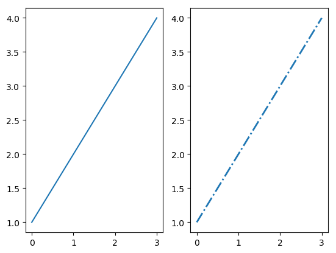
2 Exercise
2.1 Exercise 3.1, about color cycle
you dont need to specify the color explicitly, it will give a color in the cycle to each component.
import numpy as np import matplotlib.pyplot as plt t = np.arange(0.0, 5.0, 0.2) # no color declaration, mpl give one in color cycle plt.plot(t, t, t, t**2, t, t**3) plt.show()
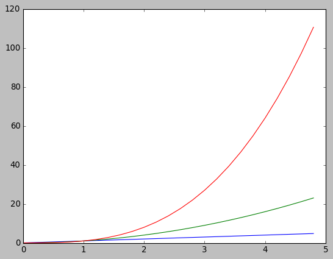
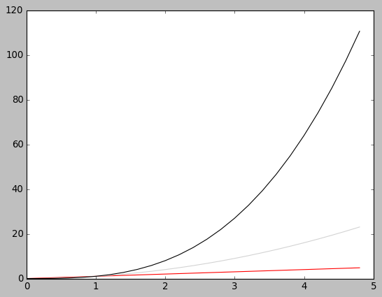
2.2 Exercise 3.2, about markers and color
t = np.arange(0.0, 5.0, 0.2) plt.plot(t, t, "*y", t, t**2, "8m", t, t**3, "sg") plt.show()
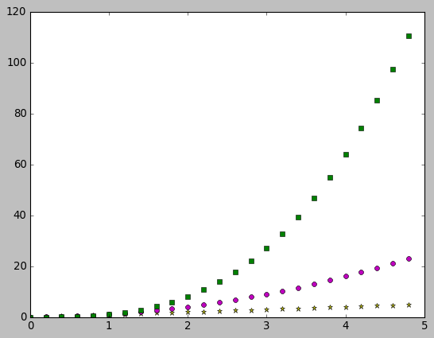
2.3 Exercise 3.3, marker, linestyle, color
make a plot that has dotted red line, large yellow diamond markers, green edge
t = np.arange(0., 5., 0.1) a = np.exp(-t) * np.cos(2*np.pi*t) plt.plot(t, a, ls='-.', marker='D', mec='g', mfc='y', c='r')
[<matplotlib.lines.Line2D at 0x7fe1979d1668>]
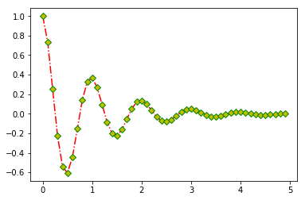
3 Misc tools
3.1 matplotlib
3.1.1 plt.plot( x1, x2, x3, y1, y2, y3)
plt.plot(x1, y1, x2, y2, x3, y3)
it will plot (x1, y1), (x2,y2), (x3, y3) 3 line, give each line a color in color cycle.
import numpy as np import matplotlib.pyplot as plt t = np.arange(0.0, 5.0, 0.2) plt.plot(t, t, t, t**2, t, t**3) plt.show()
3.1.2 ax.imshow(data, cmap)
imshow will produce a image with size related to the shape of data array.
. data array image produced . | 0 | 3 | 6 | 9 | 12 | +-----------------+ . | 1 | 4 | 7 | 10 | 13 | | | . | 2 | 5 | 8 | 11 | 14 | ----imshow----> | | . | 3 | 6 | 9 | 12 | 15 | | | . | 3 | 6 | 9 | 12 | 15 | | | . | | . +-----------------+ . . . data array image produced . +-----------------+ . | 0 | 3 | 6 | 9 | 12 | | | . | 1 | 4 | 7 | 10 | 13 | ----imshow----> | | . +-----------------+
3.2 Numpy
3.2.1 np.mgrid vs. meshgrid vs. ogrid
http://tiao.io/posts/numpy-mgrid-vs-meshgrid/
| np.mgrid[slicing1, slicing2] | np.meshgrid(arr1,arr2) | np.ogrid[slicing1,slicing2] |
|---|---|---|
| np.mgrid[0:4, 1:10] | np.meshgrid(arange(0,4), arange(1,10)) | np.ogrid[0:4, 1:10] |
| WRONG mgrid(arr1,arr2) | WRONG meshgrid[0:5, 5:9] | WRONG ogrid(arr1, arr2) |
| return array | return list | return array |
np.mgrid().T is always used to produce the points of 2D space, from wich
we can get some 2D images; also can be used to create a catesian product( or
combination ) efficiently.
- np.meshgrid produce the points of 2D or nD image.
- np.mgrid.T ===> np.meshgrid
np.ogrid ===broadcast==> np.mgrid
. . np.ogrid[0] broadcast horizontal . np.ogrid[1] broadcast vertical . +----------------------------------------------+ . | | . v .T | . np.mgrid --------> np.meshgrid np.ogrid . [[0 0 0 0 0 0 0 0 0] [[0 1 2 3] [[0] copy horizontal . [1 1 1 1 1 1 1 1 1] [0 1 2 3] [1] ----------> . [2 2 2 2 2 2 2 2 2] [0 1 2 3] [2] . [3 3 3 3 3 3 3 3 3]] [0 1 2 3] [3]] . [[9 8 7 6 5 4 3 2 1] [0 1 2 3] [.[9 8 7 6 5 4 3 2 1]] . [9 8 7 6 5 4 3 2 1] [0 1 2 3] | . [9 8 7 6 5 4 3 2 1] [0 1 2 3] | . [9 8 7 6 5 4 3 2 1]] [0 1 2 3] | copy vertically . [0 1 2 3]] v . [[9 9 9 9] . [8 8 8 8] . [7 7 7 7] . [6 6 6 6] . [5 5 5 5] . [4 4 4 4] . [3 3 3 3] . [2 2 2 2] . [1 1 1 1]] . | . v . (x , y) . | | . from np.meshgrid[0]<-------+ +-------> from np.meshgrid[1] .
. . np.meshgrid . ^ [[|0 1 2 3] . | [|0 1 2 3] . | | | | | [|0 1 2 3] . 1 +---------+---------+---------+---------+-------- [|0 1 2 3] . | | | | | +--[|0 1 2 3] . | | | | | | [|0 1 2 3] . 2 +---------+---------+---------+---------+-------- | [|0 1 2 3] . | | | | | | [|0 1 2 3] . | | | | | | [|0 1 2 3]] . 3 +---------+---------+---------+---------+-------- | [[|9 9 9 9] . | | | | | | [|8 8 8 8] . | | | | | | [|7 7 7 7] . 4 +---------+---------+---------+---------+-------- | [|6 6 6 6] . | | | | | | [|5 5 5 5] . | | | | | | [|4 4 4 4] . 5 +---------+---------+---------+---------+-------- | [|3 3 3 3] . | | | | | | [|2 2 2 2] . | | | | | | [|1 1 1 1]] . 6 +---------+---------+---------+---------+-------- | -\ . | | | | | \-\ | . | | | | | v v . 7 +---------+---------+---------+---------+-------- (|0 |9), (1 9), (2 9), (3 9) . | |(0,7) |(1,7) | | (|0 |8), (1 8), (2 8), (3 8) . | | | | | (|0 |7), (1 7), (2 7), (3 7) . 8 +---------+---------+---------+---------+-------- (|0 |6), (1 6), (2 6), (3 6) . | |(0,8) |(1,8) | | (|0 |5), (1 5), (2 5), (3 5) . | | | | | (|0 |4), (1 4), (2 4), (3 4) . 9 +---------+---------+---------+---------+-------- (|0 |3), (1 3), (2 3), (3 3) . | |(0,9) |(1,9) | | (|0 |2), (1 2), (2 2), (3 2) . | | | | | (|0 |1), (1 1), (2 1), (3 1) . --+---------+---------+---------+---------+--------------> . | 0 1 2 3 .
xs, ys = np.mgrid[:4, 9:0:-1] print (xs) print (ys) xo, yo = np.ogrid[:4, 9:0:-1] print (xo) print (yo)
3.2.2 np.stack vs. hstack vs. vstack vs. dstack
3.2.3 np.stack(tupOfArrays, axis)
stack horizontally or vertically two n dimension array to n+1
dimension array. stack two 1*3 array will get one 2*3 or 3*2 array.
. combine to n+1 D array . by *unit* of column . . +--------------> ~axis=1~ | | | . combine to || 1 | 2 | 3 | | | | . n+1 D array || 4 | 5 | 6 | | | | . by *unit* | . of row v . ~axis=0~ ------- . ------- . ------- . . +-----------------+ . v | . ................. this is the element of n+1 D . . | 1 | 2 | 3 | . array, by stack at ~axis = 0~ . ................. . | 4 | 5 | 6 | new array element-0 = . [1,2,3] . new array element-1 = . [4,5,6] . so new 1+1 array = . [[1 2 3] . [4 5 6]] . . +----------------------+ . v | . ......... this is the element of n+1 D . . | 1 | . 2 | 3 | array, by stack at ~axis = 1~ . . | 4 | . 5 | 6 | . ......... new array element-0 = . [1,4] . new array element-1 = . [2,5] . new array element-2 = . [3,6] . so new 1+1 array = . [[1 4] . [2 5] . [3 6]]
a = np.array([1,2,3]) b = np.array([4,5,6]) s_a_b = np.stack((a,b)) s_a_b_1 = np.stack((a,b), axis=1) print (s_a_b) print (s_a_b_1)
3.2.4 np.hstack(tupleOfArrays) vs. np.vstack(tupleOfArrays)
merge horizontally two n dimension array to another n dimension
array.
np. h stack(tupleOfArrays) |
np. v stack(tupleOfArrays) |
|---|---|
merge every row of a and b. |
merge every column of a and b. |
| The result keey the same rowNumber, and sum the columnNumber. | The result keey the same columnNumber, and sum the rowNumber. |
. . . a 1*3 b 1*3 merge every row of a and b 1*(3+3) . [1,2,3] [4,5,6] ---- hstack ----> [1,2,3,4,5,6] . . . a 3*1 b 3*1 merge every row of a and b 3*(1+1) . [[1], [[4], [[1 4], . [2], [5], ---- hstack ----> [2 5], . [3]] [6]] [3 6]] . . . a 1*3 b 1*3 merge every column of a and b (1+1)*3 . [1,2,3] [4,5,6] ---- vstack ----> [[1,2,3], . [4,5,6]] . . . a 3*1 b 3*1 merge every column of a and b (3+3)*1 . [[1], [[4], [[1] . [2], [5], ---- vstack ----> [2] . [3]] [6]] [3] . [4] . [5] . [6]] .
a = np.array((1,2,3)) b = np.array((4,5,6)) h_a_b = np.hstack((a,b)) print (h_a_b) ad = np.array([[1],[2],[3]]) bd = np.array([[4],[5],[6]]) h_ad_bd = np.hstack((ad,bd)) print (h_ad_bd)
a = np.array((1,2,3)) b = np.array((4,5,6)) v_a_b = np.hstack((a,b)) print (v_a_b) ad = np.array([[1],[2],[3]]) bd = np.array([[4],[5],[6]]) v_ad_bd = np.hstack((ad,bd)) print (v_ad_bd)
3.2.5 np.dstack()
numpy.dstack([[1,2,3], [4,5,6]])
array([[[1, 4], [2, 5], [3, 6]]])